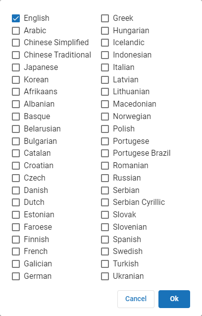

|
Time Zone
|
|
|
Container handling
|
Determine the treatment of archive (.zip, .rar, etc.) and PDF Portfolio/Package containers. When "Treat as containers" is selected all extracted files will be treated as a single family of documents with the container being identified as the parent.
PDF Portfolio files allow email boxes to be stored/converted within a folder structure. This folder structure information is extracted and available for export in the existing ‘MailFolder’ metadata field.
-
Treat archives as directories: Select this option if you want the files in the archived folder to be treated as parent and child docs when running a Discovery Job. In addition, WINMAIL.DAT attachments are treated like archives and will be processed like .ZIP files. The following are treated like archive files:
FI_ZIP = 1802
FI_ZIPEXE = 1803
FI_ARC = 1804
FI_TAR = 1807
FI_STUFFIT = 1812
FI_LZH = 1813
FI_LZH_SFX = 1814
FI_GZIP = 1815
IPRO_FI_RAR = 13000
FI_TNEF = 1197
-
Treat PDF Portfolios/Packages as Containers: This option is selected by default. The PDF Portfolio file is treated as a directory and its contents extracted and treated as loose files (except children of the contained PDFs). The PDF Portfolio will not be treated as an item, only as a container in the Nodes table. Documents inside the PDF package are treated as parent files. If this option is not selected, the PDF Portfolio file will be treated as a file parent and its contents extracted and treated as attachments in the items table. The PDF Portfolio will be treated as an item and can be processed/filtered/exported.
|
|
File extraction
|
The File extraction is on option is selected by default. The related Extract options are also selected by default and may be cleared independently, if desired.
If this option is disabled (the related Extract options are also cleared) and data is submitted for extraction, no extraction occurs from file types, such as mail stores and archives. This enables documents to be sent through Streaming Discovery knowing that all the docs were already extracted including file parents (e.g., emails and edocs).
|

|
Note: Node records are generated for container files such as .PST, .NSF, and archives; however, no items are extracted. The status indicator states: "No Content extracted, file extraction disabled by user".
|
-
Extract inline images from emails: When enabled, inline images in email messages (e.g., signature files) are extracted as attachments and treated as child documents.
When disabled, inline images are not extracted as children. The images are not treated as separate documents, and therefore are not OCRed, language-identified, or indexed. The images are rendered inline as they would look in the native file.
|

|
Note: Selecting this option can lead to a significant increase in the number of documents extracted.
|
-
Extract embedded files when possible: An embedded file is an object that has been inserted into a document and, if extracted, can act as a standalone document. This option consolidates Excel documents, Word documents, PowerPoint documents, Email File Attachments (Outlook.FileAttach), Visio drawings, Package-Embedded documents, Acrobat documents, Email Message Attachments (MailMsgATT), and Email File Attachments (MailFileAtt).
When selected, the embedded files are extracted as separate documents and treated as child documents. If this option is not selected, then the embedded files are not extracted as separate documents.
All files embedded inside of non-emails (e-docs) are extracted. These files are sent through the discovery, text extraction, metadata extraction and export with their parent. However, if this option is not selected, all files embedded inside of non-emails (edocs) are not extracted. They are ignored and only the parent document is processed.
|
|
OCR
|
Configure your OCR settings. Optical Character Recognition is used to identify and extract text from image-based files that can be indexed and searched in Review. To use OCR on image-based files such as .pdf, .jpg, .bmp, .tiff, etc., ensure the slider at the top is set to OCR is on.
|
|
Note: You can turn off OCR by selecting the slider so that it turns gray. Note that disabling OCR prevents the identification and extraction of text from image-based files.
|
You can likewise set the following options:
-
OCR Images: Images are OCRed to retrieve any available text from the image. The OCR is available for indexing and searching in the Review application.
-
OCR PowerPoint: Turn this option on to perform OCR on Microsoft PowerPoint files during indexing to get text from embedded content in the slides. This results in slower indexing speeds for PowerPoint files, but more accurate search results.
-
OCR PDF pages missing text: PDFs with no embedded text perform OCR before indexing or language identification. PDF pages with embedded text (text-behind) will have text extracted. Comments on a PDF file are also extracted.
The OCR text is added to any extracted text from the PDF. All text is available for indexing and searching in the Review application.
Optionally, select the option Specify OCR threshold for PDFs OCR any page with fewerthan n characters and indicate a value. The default value is 75 characters. The maximum value is 100. If the value is less than the threshold you set, will send the page to be OCRed; otherwise, the text will just be extracted.
-
Minimum average OCR confidence (1-100): The level range settings are from 1 to 100. The default is 50. The confidence level is the average percentage of confidence for each document for all pages within a document on which OCR was performed. Success or failure of OCR results is based on the average confidence level of the document. If the average confidence level is below the selected threshold, the page is considered as an OCR error.
The Discovery Job Status and Summary Panel displays OCR Applied[Errors], where Applied shows the number of pages that required OCR (not OCRed) and where [Errors] shows the number of those pages that did not meet the specified average confidence level.
|
|
Note: For calculating average page confidence, pages in PDF docs with text behind them are considered 100%. OCR failures are considered 0%.
|
-
Use OCR Workers: Select this option to simultaneously create an OCR job with the Streaming Discovery Job. The Job remains active until the Streaming Discovery Job is complete.
OCR must be complete before the document is eligible for export.
Workers that are Eligible or Exclusive will accept OCR tasks if licensing is available. A different task table may be specified for OCR Workers.
Selecting this option can improve performance. If the Use OCR Workers option is not selected, OCR tasks are assigned to licensed Streaming Discovery Workers.
OCR worker task table: If a custom task table is selected from the drop-down menu, OCR tasks are sent to those Workers assigned to the selected task table.
-
OCR Languages: includes multi-language OCR capability. The QC document contains the original OCR languages that were selected for the Data Extract Job. A valid multi-language OCR license must be available in order to modify the original selected languages, if necessary.
To reserve a portion of the multi-language OCR licenses for QC and to keep the Worker from consuming all available licenses, use the Multi-Language OCR License slider located in the Controller System Options dialog box.
In the OCR Languages field, click to display the OCR Foreign Language dialog box.

After selecting the languages, click OK to close the dialog box.
Click here to view a list of supported languages.
-
English
-
Arabic
-
Chinese Simplified
-
Chinese Traditional
-
Japanese
-
Korean
-
Afrikaans
-
Albanian
-
Basque
-
Belarusian
-
Bulgarian
-
Catalan
-
Croatian
-
Czech
-
Danish
|
-
Dutch
-
Estonian
-
Faorese
-
Finnish
-
French
-
Galician
-
German
-
Greek
-
Hungarian
-
Icelandic
-
Indonesian
-
Italian
-
Latvian
-
Lithuanian
-
Macedonian
|
-
Norwegian
-
Polish
-
Portuguese
-
Portuguese Brazil
-
Romanian
-
Russian
-
Serbian
-
Serbian Cyrillic
-
Slovak
-
Slovenian
-
Spanish
-
Swedish
-
Turkish
-
Ukrainian
|
Click here to view some caveats to OCR Foreign Language handling.
English is the only language that is selected by default. The more languages that are selected; the lower the confidence level will be for correctly identifying the languages in a document.
-
If English is selected, Arabic will not be available for selection.
-
If Arabic is selected, all other languages will not be available for selection.
-
If one of the CJK (Chinese, Japanese, Korean) languages are selected, then all remaining CJK languages will not be available for selection. Other languages (excluding Arabic) may be selected.
-
If Chinese Simplified is selected, Chinese Traditional, Japanese, and Korean will not be available for selection.
-
If Chinese Traditional is selected, Chinese Simplified, Japanese, and Korean will not be available for selection.
-
If Japanese is selected, Chinese Simplified, Chinese Traditional, and Korean will not be available for selection.
-
If Korean is selected, Chinese Simplified, Chinese Traditional, and Japanese will not be available for selection.
|
|
Email Hash
|
Displays the Custom Email Hash dialog box. Select from the following options:
Some emails may have identical values in the properties that uses to generate hashes; however, the values may differ in the attachment contents. Family hash accounts for this by using the hash values of the extracted attachments to calculate a second hash for the email parent.
De-duplication may be performed on parent hash values rather than family hash values for newly created Streaming Discovery Jobs that are using version 2016.3.3 only. (Note: Existing Streaming Discovery Jobs retain the family hash setting.) The default setting uses family hash.
This setting is found in the DedupUseFamilyHash field of the ConfigurationProperties table for the Configuration database. The default value is 1. To switch to parent hash value, change the value from 1 to 0 in the DedupUseFamilyHash field. If the value is set to 0 in the ConfigurationProperties table, then family hashes will not be considered when applying de-duplication.
The method of gathering and creating the MD5 hash values changed for newly created Cases (Projects). Hashing of emails uses Coordinated Universal Time (UTC) to ensure proper de-duplication across time zones.
In most cases, MD5 hash values are calculated on the file itself. For more reliable de-duplication of emails though, it is required that de-duplication occur on the information contained within it and not the file itself. There are many reasons for this; the simplest is that when an email is saved out of its container (PST, NSF, etc.), the file created contains information that would change the hash value of the same email each time the email is saved out.
When an email is discovered within , it is assigned a hash value based on fields chosen by the user. The values of these fields are concatenated, and the text is hashed. Select from the following email fields to generate the hash value:
|
|
Note: Changing selected fields midway through a case will not update values of historic documents. This may result in the failure to identify future duplicates.
|
Select from either Creation Date or Last Modification Date. The selected value will be used when calculating the MD5 hash value if the normal Email Date value is not present. This commonly occurs for Draft messages that have not been sent.
Start Time is always used if it exists.
By default, Subject, From/Author, Email Date, and an Alternate Email Date of Creation Date are used for email hash generation.
|